Una cocina pensada para hacer más con menos
La intervención abarcó la cocina y los dos baños de la planta. En la cocina, el desafío era concentrar múltiples funciones en pocos metros cuadrados, sin resignar amplitud ni comodidad de uso.
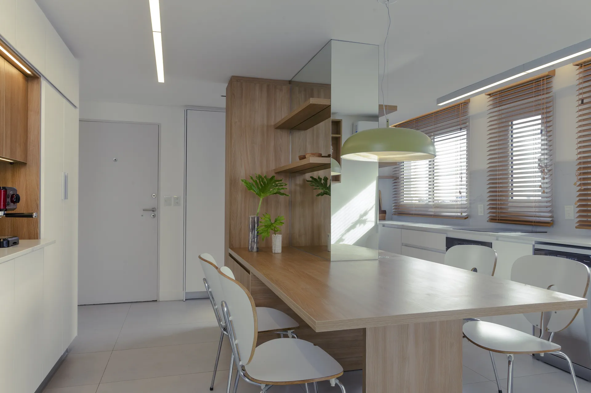

El corazón del proyecto
Para lograrlo, el estudio diseñó una pieza central que organiza el espacio. Incorpora guardado, sector de lavado, superficies de apoyo y comedor diario.
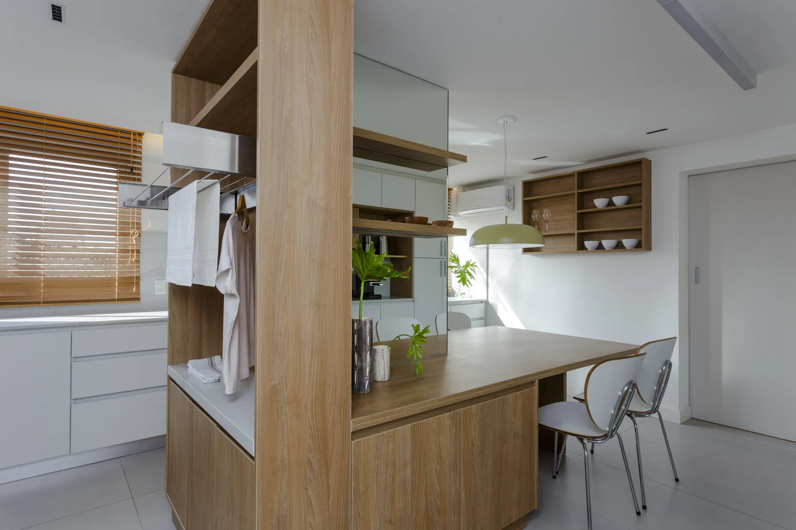
Una sola pieza
De un lado, la mesa del comedor diario. Del otro, el lavadero, con mesada de apoyo y tendedero.
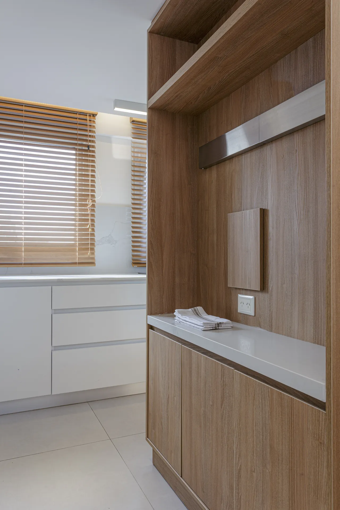
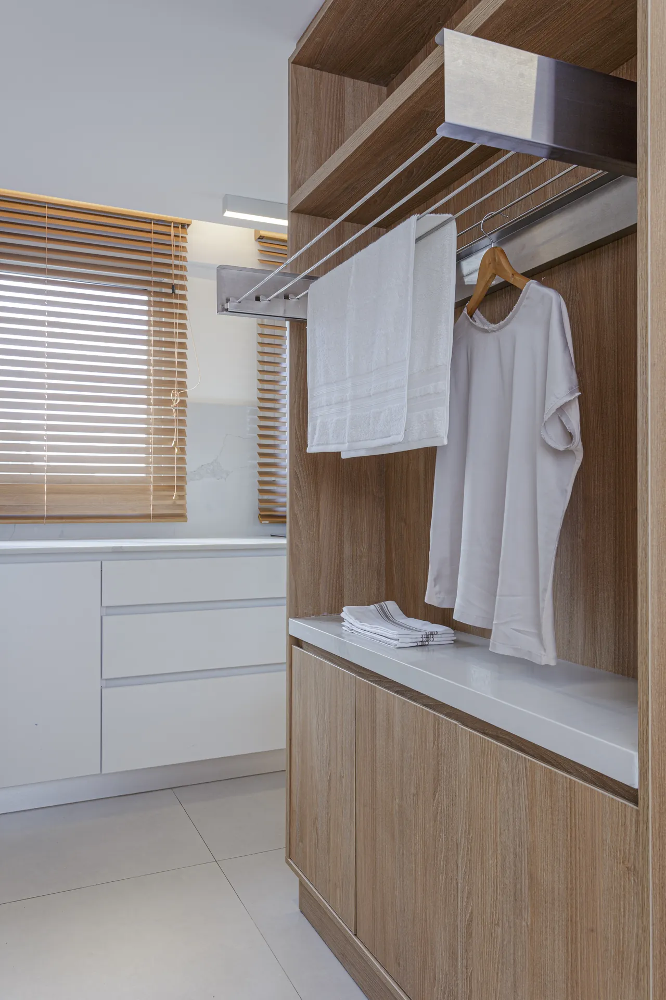
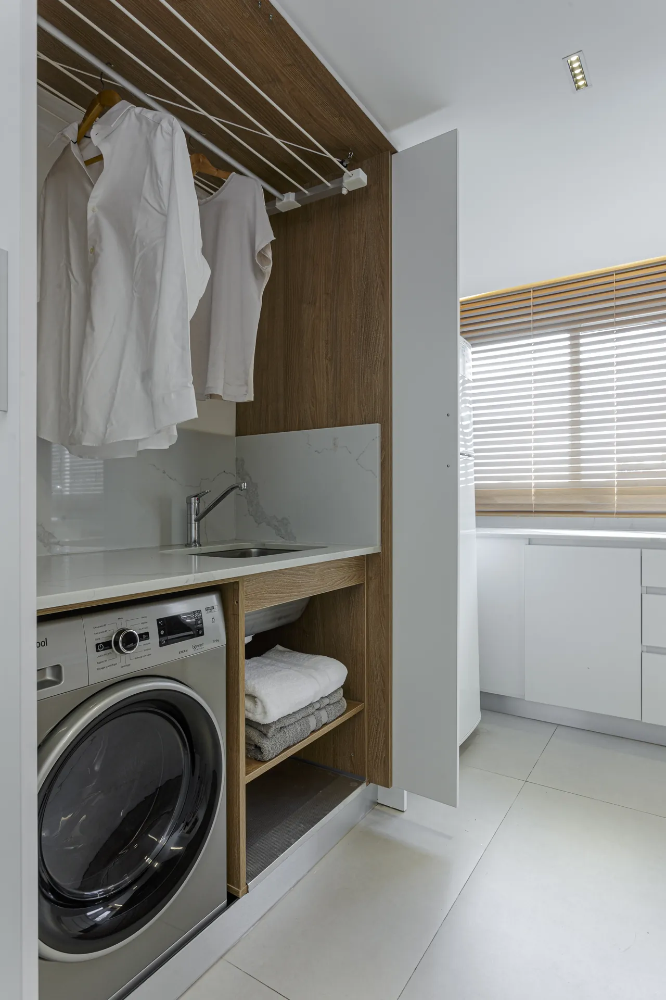
Todo a mano
El tendedero de acero queda oculto en la pieza y se extiende solo cuando hace falta. El lavarropas y la pileta quedan detrás de puertas.
Más luz, más espacio
La incorporación de planos espejados potencia la luz natural y multiplica visualmente las dimensiones del ambiente.
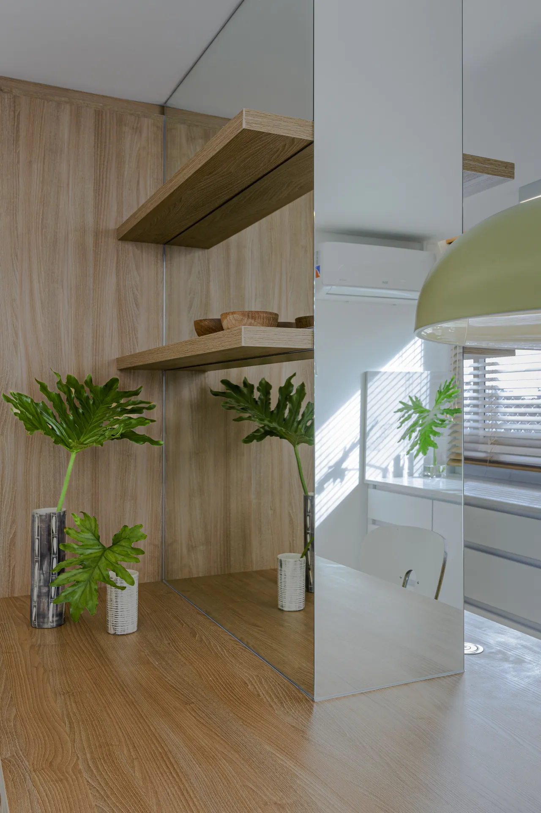
Una pieza central que organiza todo el espacio y se convierte en el verdadero corazón del proyecto
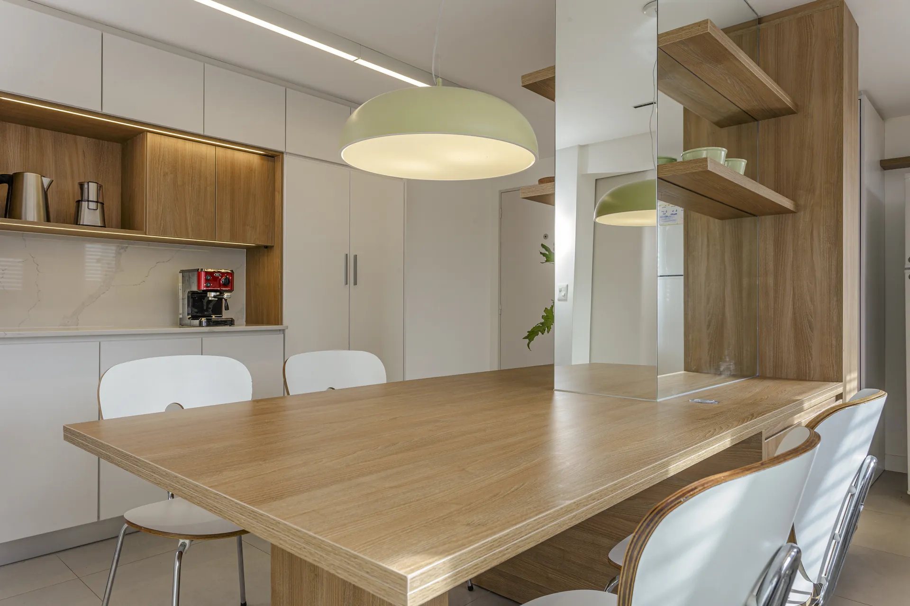
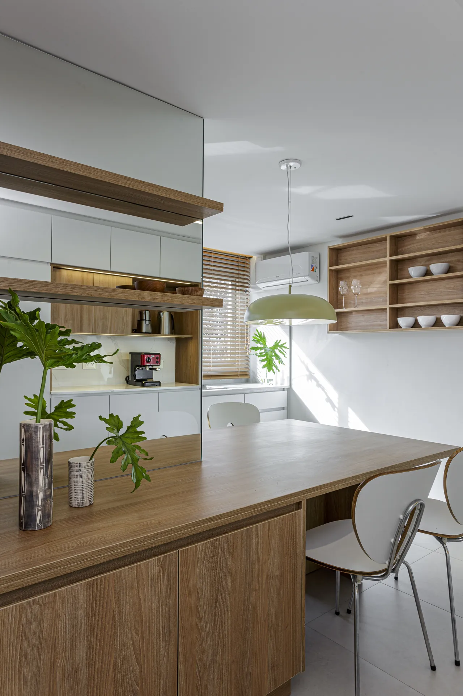
Guardado al máximo
Cada mueble se diseñó a medida para aprovechar al máximo la capacidad de guardado: alacenas hasta el techo, estantes abiertos y un nicho de madera iluminado para el café.
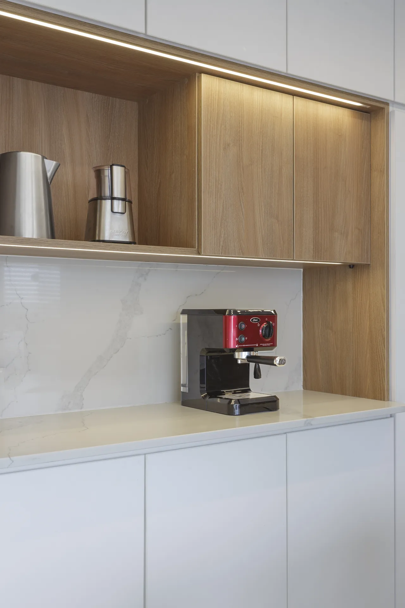
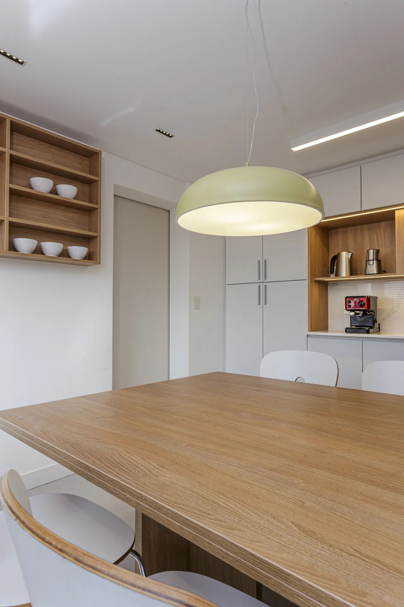
Líneas simples
La intervención se completó con la renovación de los dos baños de la planta, resueltos con líneas simples y materiales durables que acompañan el lenguaje contemporáneo del resto de la vivienda.
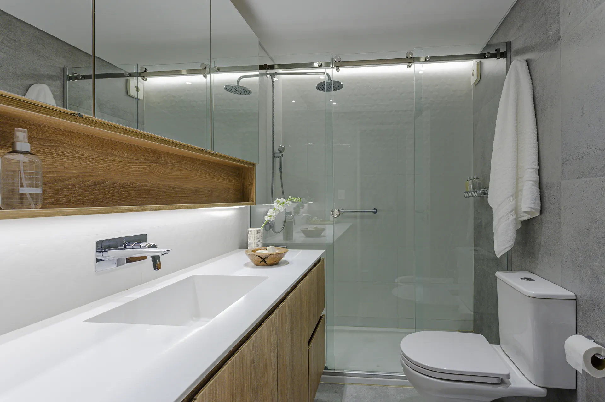
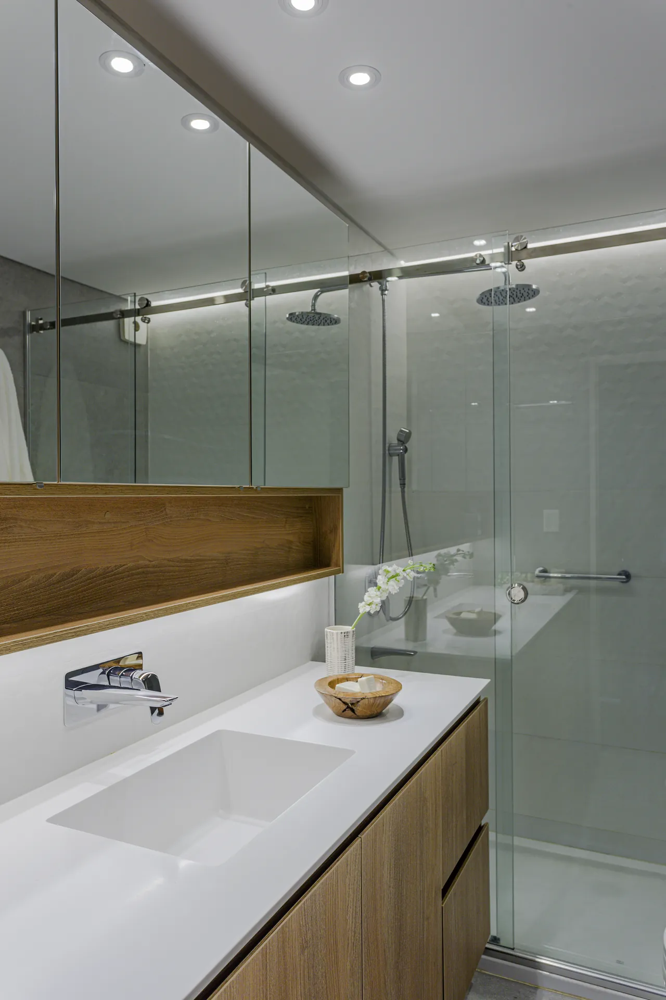
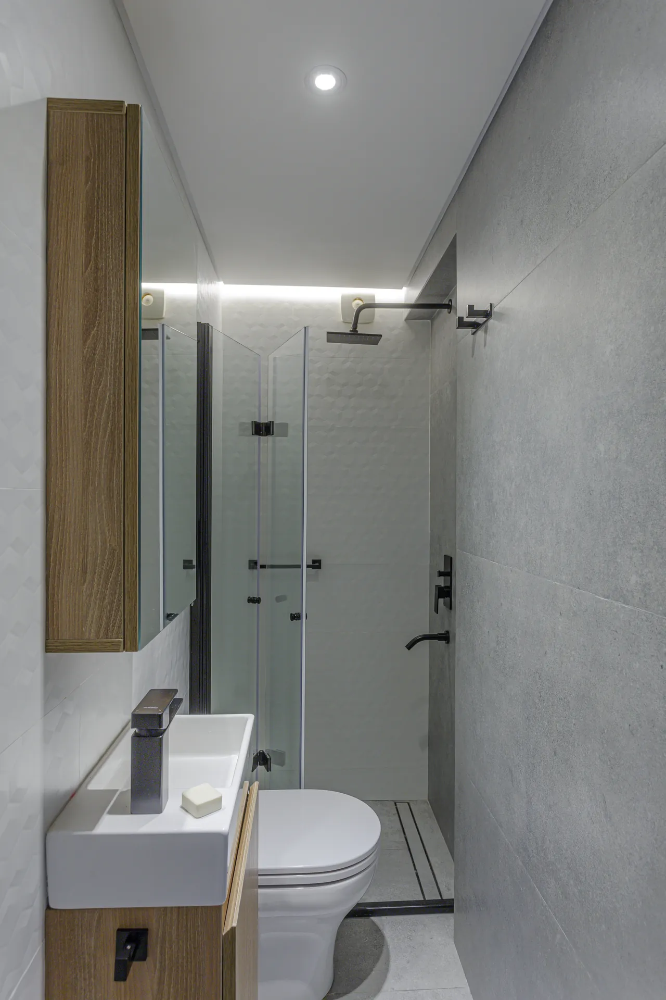
Un baño amplio y uno compacto
En el primero, una mesada larga con nicho de madera iluminado y ducha con mampara corrediza. En el segundo, más angosto, una pileta compacta, botiquín de madera y grifería negra.
Luz y materia
Esta obra es una optimización y diseño de cocina y baños: el estudio reorganiza el espacio, diseña cada mueble a medida y resuelve guardado e iluminación para que todo funcione mejor.
Conocer los servicios
Otros proyectos
Ver todos los proyectos


Todo empieza con una conversación
El estudio diseña viviendas completas en Argentina, España y Estados Unidos.